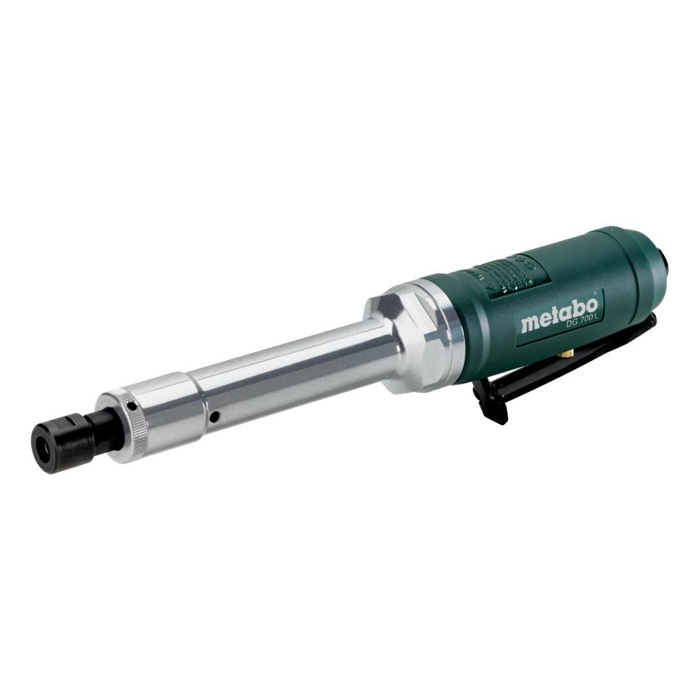

601555000

| Operating pressure | 6.2 bar / 90 psi |
| Maximum speed | 22000 rpm |
| Operating pressure | 6.2 bar / 90 psi |
| Air requirement | 600 l/min / 21 cfm |
| Maximum speed | 22000 rpm |
| Collet chuck bore | 6 mm / 0.2362 " |
| Weight | 1.3 kg / 2.9 lbs |
| Surface grinding | 3.1 m/s² |
| Uncertainty of measurement K | 0.8 m/s² |
| Sound pressure level | 89 dB(A) |
| Sound power level (LwA) | 100 dB(A) |
| Uncertainty of measurement K | 3 dB(A) |
| EURO Plug-in nipple 1/4" |
| ARO/Orion Plug-in nipple 1/4" |
| ISO Plug-in nipple 1/4" |
| Collet 6 mm (industry standard) |
| Oil bottles |